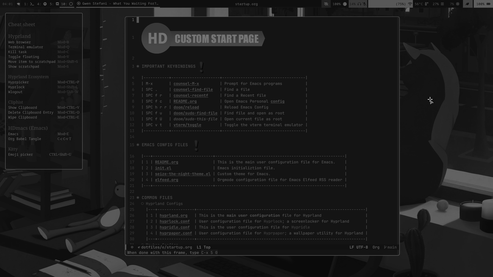

HD's Hyprland Config
Table of Contents

BACKGROUND
What is Hyprland?
Hyprland is an independent tiling Wayland compositor written in C++. Noteworthy features of Hyprland include dynamic tiling, tabbed windows, a clean and readable C++ code-base, and a custom render-er that provides window animations, rounded corners, and Dual-Kawase Blur on transparent windows. General usage and configuration is thoroughly documented at Hyprland wiki. – https://wiki.archlinux.org/title/Hyprland
How do I use Hyprland?
Screenshots


Reloading this config
To ensure that changes made in this file are saved to the hyprland config we need to do three things:
- save this file with
:w - tangle the contents of the source code blocks in this file to the hyprland config. To do this we must run the command
org-babel-tanglewith the key comboC-c C-v t. this will copy the contents of all specified source code blocks into the hyprland.conf file. - Finally we must tell hyprland to reload its config file by running the
hyprctl reloadcommand.
ESSENTIAL PROGRAM CONFIGURATIONS
This section includes links to the configuration files used by non Hyprland packages to create a functionally complete Hyprland Window Manager/Desktop Environment.
HYPRLAND CONFIGURATION
Variables
Essential environment variables
env = WLR_NO_HARDWARE_CURSORS,1 $mainMod = SUPER $terminal = kitty $menu = rofi -show combi -combi-modi drun,run,recursivebrowser $filemenu = rofi -show combi -combi-modi window,recursivebrowser,ssh $editor = emacsclient -ca "" $controlpanel = ~/.local/bin/overrides-gui
Less essential environment variables
$fileManager = thunar $browser = xdg-open about:profiles
Environment Variables
Some default env vars.
env = XCURSOR_SIZE,24 env = QT_QPA_PLATFORMTHEME,qt6ct
Autostarts
Autostarts are programs which are executed when Hyprland starts. Bellow are the autostart configurations for my system.
Necessary for proper system functionality
- KDE Policy Kit
exec-once = systemctl --user start plasma-polkit-agent - Waybar and NMapplet
exec-once = waybar exec-once = nm-applet --indicator
- Hypridle
exec-once = hypridle - Hyprpaper
exec-once = hyprpaper - SwayNC
exec-once = swaync -c ~/.config/swaync/config.json -s ~/.config/swaync/style.css - Cliphist
Start Cliphist
Stores only text data
exec-once = wl-paste --type text --watch cliphist storeStores only image data
exec-once = wl-paste --type image --watch cliphist store - Playerctl
start playrctl daemon
exec-once = playerctld - Low Battery Script
Start a script to notify the user when the battery is low.
exec-once = ~/.config/hypr/scripts/low_battery.sh - Bluelight Script
Run my bluelight script which sets a
hyprsunsetvalue.exec-once = ~/dotfiles/hypr/scripts/blue-lightNormally this script would run once an hour via
cron; however, at times I will login to my system in-between one of these hourly checks. Therefor it is necessary to run thebluelightscript once upon login to properly set thehyprsunsetvalue at Hyprland startup. - Greyscale Script
Run my greyscale script which enables/disables a shader for Hyprland.
exec-once = ~/.local/bin/greyscaleNormally this script would run once an hour via
cron; however, at times I will login to my system in-between one of these hourly checks. Therefor it is necessary to run thegreyscalescript once upon login to properly set the shader values at Hyprland startup.
Permissions
If you have hyprland-qtutils installed, you can make use of Hyprland’s built-in permission system.
For now, it only has one permission, but it might include more in the future. Permissions
Permissions work a bit like Android ones. If an app tries to do something sensitive with the compositor (Hyprland), Hyprland will pop up a notification asking you if you want to let it do that.
Enable Permissions
ecosystem:enforce_permissions = true
Screencopy Permissions
permission = /usr/bin/grim, screencopy, allow permission = /usr/bin/hyprshot, screencopy, allow permission = /usr/bin/hyprlock, screencopy, allow permission = /usr/bin/hyprpicker, screencopy, allow permission = /usr/(lib|libexec|lib64)/xdg-desktop-portal-hyprland, screencopy, ask
Plugin Permissions
Deny hyprctl from loading 3rd party plugins. If a plugin needs to be loaded change this to ask, or allow.
permission = /usr/bin/hyprctl, plugin, deny
Input Configuration
input { kb_layout = us kb_variant = kb_model =
Remap Capslock to CTRL and turn Numlock on by default
kb_options = caps:ctrl_modifier kb_rules = numlock_by_default = true follow_mouse = 1
Touchpad configuration
touchpad { natural_scroll = no } sensitivity = 0 # -1.0 to 1.0, 0 means no modification. }
Fixes nvidia issues
cursor { no_hardware_cursors = true }
Per-device Input Configuration
See https://wiki.hyprland.org/Configuring/Keywords/#per-device-input-configs for more
device { name = elan-trackpoint sensitivity = 1 }
Keybindings
Critical
These are keybindings which are critical for proper system functionality
bind = $mainMod, Q, exec, $terminal bind = $mainMod, C, killactive, bind = $mainMod, E, exec, $editor bind = $mainMod, M, exec, $fileManager bind = $mainMod, V, togglefloating, bind = $mainMod, D, exec, $menu bind = $mainMod, O, exec, $controlpanel bind = ALT, TAB, exec, $filemenu bind = $mainMod $shiftmod, C, exec, ~/dotfiles/hypr/scripts/reloads.sh
Move Focus
Move focus with $mainMod + arrow keys
bind = $mainMod, left, movefocus, l bind = $mainMod, right, movefocus, r bind = $mainMod, up, movefocus, u bind = $mainMod, down, movefocus, d
Move focus with $mainMod + HJKL keys
bind = $mainMod, H, movefocus, l bind = $mainMod, J, movefocus, r bind = $mainMod, K, movefocus, u bind = $mainMod, L, movefocus, d
Workspaces
- Switch to Workspace (x)
Switch workspaces with
$mainMod+[0-9]bind = $mainMod, 1, workspace, 1 bind = $mainMod, 2, workspace, 2 bind = $mainMod, 3, workspace, 3 bind = $mainMod, 4, workspace, 4 bind = $mainMod, 5, workspace, 5 bind = $mainMod, 6, workspace, 6 bind = $mainMod, 7, workspace, 7 bind = $mainMod, 8, workspace, 8 bind = $mainMod, 9, workspace, 9 bind = $mainMod, 0, workspace, 10
Switch to the "special" or "scratchpad" workspace
bind = $mainMod, S, togglespecialworkspace, magic - Move Windows to Workspace (x)
Move active window to a workspace with
$mainMod+SHIFT+[0-9]bind = $mainMod SHIFT, 1, movetoworkspace, 1 bind = $mainMod SHIFT, 2, movetoworkspace, 2 bind = $mainMod SHIFT, 3, movetoworkspace, 3 bind = $mainMod SHIFT, 4, movetoworkspace, 4 bind = $mainMod SHIFT, 5, movetoworkspace, 5 bind = $mainMod SHIFT, 6, movetoworkspace, 6 bind = $mainMod SHIFT, 7, movetoworkspace, 7 bind = $mainMod SHIFT, 8, movetoworkspace, 8 bind = $mainMod SHIFT, 9, movetoworkspace, 9 bind = $mainMod SHIFT, 0, movetoworkspace, 10
Move active window to "special" workspace
bind = $mainMod SHIFT, S, movetoworkspace, special:magic - Scroll Through Workspaces
Scroll through existing workspaces with
$mainMod+ scrollbind = $mainMod, mouse_down, workspace, e+1 bind = $mainMod, mouse_up, workspace, e-1
Resizing Windows
Toggle window fullscreen
bind = $mainMod, F, fullscreen
Move/resize windows with $mainMod + LMB/RMB and dragging
bindm = $mainMod, mouse:272, movewindow bindm = $mainMod, mouse:273, resizewindow
SUPER + CTRL Keybindings
- Clipboard
- Clipboard submap
Switch to submap called clipboard
bind = ALT, C, submap, Clipboard submap = Clipboard
- Define submap keybindings
bind =, V,exec,cliphist list | rofi -dmenu | cliphist decode | wl-copy bind =, D,exec,cliphist list | rofi -dmenu | cliphist delete bind =, E,exec,cliphist list | rofi -dmenu | cliphist wipe
- Reset submap
bind =, escape, submap, reset submap = reset
- Clipboard submap
Hyprshot
- Define submap
bind = ALT, P, submap, Screencopy submap = Screencopy
- Hyprshot
bind =, O, exec, hyprshot --freeze -m output -t 7500 -o ~/Pictures/Screenshots/ bind =, W, exec, hyprshot --freeze -m window -t 7500 -o ~/Pictures/Screenshots/ bind =, R, exec, hyprshot --freeze -m region -t 7500 -o ~/Pictures/Screenshots/
- Color Picker
bind=, P,exec,hyprpicker -a -f hex - Reset Submap
bind =, escape, submap, reset submap = reset
# bind =, PRINT, exec, hyprshot --freeze -m output -t 7500 #bind = $mainMod, PRINT, exec, hyprshot --freeze -m window -t 7500 #bind = $shiftMod, PRINT, exec, hyprshot --freeze -m region -t 7500
Volume Control
Use Media keys to control volume settings
bind =, XF86AudioLowerVolume, exec, wpctl set-volume @DEFAULT_AUDIO_SINK@ 5%- bind =, XF86AudioRaiseVolume, exec, wpctl set-volume @DEFAULT_AUDIO_SINK@ 5%+ bind =, XF86AudioMute, exec, wpctl set-mute @DEFAULT_AUDIO_SINK@ toggle
Set microphone key to toggle microphone mute
bind =, XF86AudioMicMute, exec, wpctl set-mute @DEFAULT_AUDIO_SOURCE@ toggle
Brightness Control
binde = ,XF86MonBrightnessDown, exec, brightnessctl set 10%- binde = ,XF86MonBrightnessUp, exec, brightnessctl set 10%+
Default Web Browser Switching
similar to the SUPER + CTRL keybindings the below keybindings all use the CTRL + ALT key combination. When i get around to implementing submaps i will make the CTRL + ALT combo the submap trigger.
bind = CTRL ALT, B, exec, xdg-settings set default-web-browser brave-browser.desktop bind = CTRL ALT, F, exec, xdg-settings set default-web-browser org.mozilla.firefox.desktop bind = CTRL ALT, M, exec, xdg-settings set default-web-browser mullvad-browser.desktop bind = CTRL ALT, L, exec, xdg-settings set default-web-browser librewolf.desktop
Execute the default web browser
bind = $mainMod, B, exec, $browser
Screen Capture
Bind to capture an output
bind =, PRINT, exec, hyprshot -m output
Bind to capture a window
bind = $mainMod, PRINT, exec, hyprshot -m window
Bind to capture a selected area
bind = $shiftMod, PRINT, exec, hyprshot -m region
Monitor Configuration
Set the the default monitor preference
See https://wiki.hyprland.org/Configuring/Monitors/
monitor=,preferred,auto,auto
Specify configuration for built in Laptop Display
monitor=eDP-1, 3840x2160@60.0020, 0x0, 1.5 # for use with no 4k laptop. Otherwise comment out in favor of the above monitor configuration. monitor=eDP-1, 1920x1080@60.02700, 0x0, 1.0
Specify configuration for HP DislayPort Monitor
monitor=DP-5, 1920x1200@59.9500, auto-up, 1
Specify configuration for HML HDMI Monitor
monitor=HDMI-A-4, 3840x2160@30.00000, auto-right, 1.5, transform, 1 monitor=HDMI-A-1, 3840x2160@30.00000, auto-right, 1.5, transform, 1
Decoration
General
Enable rounding of window corners
decoration { # See https://wiki.hyprland.org/Configuring/Variables/ for more rounding = 6
- Shaders
Enable a screen shader based on the provided shader file. In this case the provided file is a shader file which enables a greyscale effect.
###screen_shader = ~/dotfiles/hypr/shaders/greyscale-shader.glsl
bellow is an example of this shader in action:

- Blur
Configure blur and drop shadow. These settings are currently disabled; though i am leaving them in (just commented out) so i can quickly re-enable in future if I desire.
blur { enabled = true size = 8 ignore_opacity = true new_optimizations = true passes = 1 } # drop_shadow = yes # shadow_range = 4 # shadow_render_power = 3 # col.shadow = rgba(1a1a1aee)
}
- Border Decorations
- Dracula Theme
general { col.active_border = rgb(44475a) rgb(bd93f9) 90deg col.inactive_border = rgba(44475aaa) col.nogroup_border = rgba(282a36dd) col.nogroup_border_active = rgb(bd93f9) rgb(44475a) 90deg no_border_on_floating = false border_size = 2
non-gradient alternative
col.active_border = rgb(bd93f9) col.inactive_border = rgba(44475aaa) col.group_border = rgba(282a36dd) col.group_border_active = rgb(bd93f9)
darker alternative
col.active_border = rgb(44475a) # or rgb(6272a4) col.inactive_border = rgb(282a36) col.group_border = rgb(bd93f9) col.group_border_active = rgb(44475a) # or rgb(6272a4)
}
- Gruvbox Theme
general { col.active_border = rgba(fabd2fff) rgba(8ec07caa) 90deg col.inactive_border = rgba(44475aaa) col.nogroup_border = rgba(3c3836cc) col.nogroup_border_active = rgba(fabd2fff) rgba(8ec07caa) 90deg no_border_on_floating = false border_size = 2
non-gradient alternative
col.active_border = rgb(bd93f9) col.inactive_border = rgba(44475aaa) col.group_border = rgba(282a36dd) col.group_border_active = rgb(bd93f9)
darker alternative
col.active_border = rgb(44475a) # or rgb(6272a4) col.inactive_border = rgb(282a36) col.group_border = rgb(bd93f9) col.group_border_active = rgb(44475a) # or rgb(6272a4)
}
- Dracula Theme
- Group Decorations
Decorations for when windows are grouped together.
- Dracula theme
group { #col.border_active = rgba(bd93f9ff) rgba(ff79c6ff) rgba(ffb86caa) rgba(8be9fdaa) 45deg col.border_active = rgba(bd93f9ff) rgba(8be9fdaa) 45deg groupbar { enabled = true gradients = true font_size = 16 font_family = JetBrains Mono height = 24 text_color = rgba(f8f8f2ff) #white col.active = rgb(bd93f9) rgb(44475a) 90deg col.inactive = rgba(282a36dd) } }
- Gruvbox theme
group { col.border_active = rgba(fabd2fff) rgba(8ec07caa) 45deg groupbar { enabled = true gradients = true font_size = 16 font_family = JetBrains Mono height = 24 text_color = rgba(1E1F29ff) col.active = rgba(fabd2fff) rgba(d79921cc) rgba(ebdbb2aa) 90deg col.inactive = rgba(ebdbb2aa) } }
- Dracula theme
- Backup decoration settings
this is a copy of the default decoration settings; copied here for reference. they are not copied to the running configuration.
decoration { # col.shadow = rgba(1E202966) # suggested shadow setting #drop_shadow = yes #shadow_range = 60 #shadow_offset = 1 2 #shadow_render_power = 3 #shadow_scale = 0.97 }
- Performance Enhancements
Disable some things to improve performance/improve battery life.
decoration:shadow:enabled = false decoration:blur:enabled = false misc:vfr = true
Animations
Some default animations, see https://wiki.hyprland.org/Configuring/Animations/ for more
animations { enabled = yes bezier = myBezier, 0.05, 0.9, 0.1, 1.05 animation = windows, 1, 7, myBezier animation = windowsOut, 1, 7, default, popin 80% animation = border, 1, 10, default animation = borderangle, 1, 8, default animation = fade, 1, 7, default animation = workspaces, 1, 6, default }
Disable Default Wallpaper
See https://wiki.hyprland.org/Configuring/Variables/ for more
Set to 0 or 1 to disable the anime mascot wallpapers
misc { force_default_wallpaper = 0 }
Layout
General
Set the gap and border variables for hyprland
See https://wiki.hyprland.org/Configuring/Variables/ for more
general { gaps_in = 5 gaps_out = 10 border_size = 2 col.active_border = rgba(8be9fdaa) rgba(bd93f9ff) 90deg col.inactive_border = rgba(595959aa) layout = dwindle
Please see https://wiki.hyprland.org/Configuring/Tearing/ before you turn this on
allow_tearing = false
}
- Define the Dwindle layout
See https://wiki.hyprland.org/Configuring/Dwindle-Layout/ for more
Master switch for pseudo-tiling. Enabling is bound to
$mainMod + Pin the keybinds section belowdwindle { pseudotile = yes
You probably want this
preserve_split = yes } - Master Layout
See https://wiki.hyprland.org/Configuring/Master-Layout/ for more
general:layout = master master { new_status = true }
- Gestures
Enable "workspace swipe"; to use the touchpad to move between Hyprland workspaces.
# Workspace swipe for Hyprland <- 0.50 # gestures { # workspace_swipe = on #} # Workspace swipe for Hyprland 0.51 -> gesture = 4, horizontal, workspace,
Window Rules
- Examples
Example windowrule v1
windowrule = float, ^(kitty)$Example windowrule v2
windowrulev2 = float,class:^(kitty)$,title:^(kitty)$=See https://wiki.hyprland.org/Configuring/Window-Rules/ for more
- V2 Window Rules
Check if a window is xwayland
windowrulev2 = bordercolor rgb(ff5555),xwayland:1You'll probably like this.
windowrulev2 = suppressevent maximize, class:.*- Floats
Force YAD windows to float
windowrulev2 = float,class:^(yad)$ windowrulev2 = float,class:^(waypaper)$
- Workspace assignments
Assign Yad windows to workspace 1
windowrulev2 = workspace 1,class:^(yad)$Assign personal website to workspace 1
windowrulev2 = workspace 2,title:^(HD's Personal Documentation)$
Assign Emacs windows to workspace 3
windowrulev2 = workspace 3,class:^(emacs)$Assign Github windows to workspace 3
windowrulev2 = workspace 3,title:^(GitHub)$Assign Jellyfin, Spotify, and Gapless windows to workspace 4
windowrulev2 = workspace 4,class:^(com.github.iwalton3.jellyfin-media-player)$ windowrulev2 = workspace 4,title:^(Spotify)$ windowrulev2 = workspace 4,class:^(com.github.neithern.g4music)$
Assign steam to workspace 7
windowrulev2 = workspace 7,class:^(steam)$Assign librewolf to workspace 8
windowrulev2 = workspace 8,class:^(librewolf)$ - Screen sharing privacy
windowrulev2 = noscreenshare, class:^(org.keepassxc.KeePassXC) windowrulev2 = noscreenshare, class:^(com.belmoussaoui.Authenticator)
- Floats